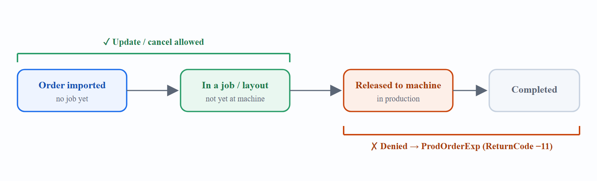

Order Update & Cancellation
Existing orders can be updated or cancelled through the interface — but only while they have not yet entered production.

7.1 Rules
-
Update/cancel is allowed as long as none of the layouts belonging to the job have been sent to the machine.
-
If no job has been created for the order, the order is simply updated or deleted.
-
If the order already resulted in a job/layout (not yet released), the affected job and layout are marked as outdated and can be refreshed against the new order information (the same way layouts based on out-of-date part designs are refreshed).
-
If the order’s layout has been released to the machine, the request is denied and a feedback file is written.
7.2 Cancellation request
Sent in a ProdOrderImp file. One request can delete several orders:
<DeleteProductionOrders>
<DeleteProductionOrder OrderNo="OR-100045"/>
<DeleteProductionOrder OrderNo="OR-100046"/>
</DeleteProductionOrders>7.3 Update request
Re-send a ProdOrderImp containing the same OrderNo as an existing order — this is treated as an update, not a new order. The fields that may change (while not yet in production) are:
| Field | Meaning |
|---|---|
|
Order description |
|
Due date |
|
Desired quantity |
7.4 Denial feedback
When the order is already in production, the software writes ProdOrderExp.xml to the PPS output directory:
<ProductionOrderFeedback>
<ProductionOrder OrderNo="OR-100045">
<TimeStamp>27.01.2026 19:44:10</TimeStamp>
<ReturnCode>-11</ReturnCode>
<ErrorMessage>Order already in production, cancellation/update not possible</ErrorMessage>
</ProductionOrder>
</ProductionOrderFeedback>|
Warning
|
Housekeeping limitation. Orders not yet in a job can be deleted through the interface. Once an order is part of a job, it cannot be deleted via the interface — it must be removed inside the production software. |